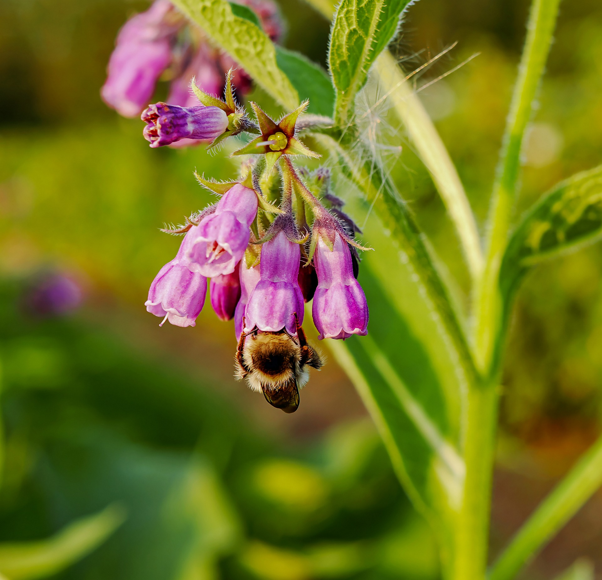

- Use gloves to protect yourself against the leaf irritants.
- Collect a large bundle of comfrey and/or nettle leaves.
- Chop up the leaves.
- Pack the chopped leaves tightly into a container with a lid (a large bucket
is perfect!). Use a brick to weigh down the leaves.
- Keep the container warm (i.e. use a black container positioned in the sun).
- Mix well daily. This aerates the mixture - foaming indicates that the leaves
are decomposing.
- When foaming ceases (typically after two or three weeks) draw off the liquid.
- Dilute the liquid 1:10 for use a potassium rich liquid plant feed.
Comments